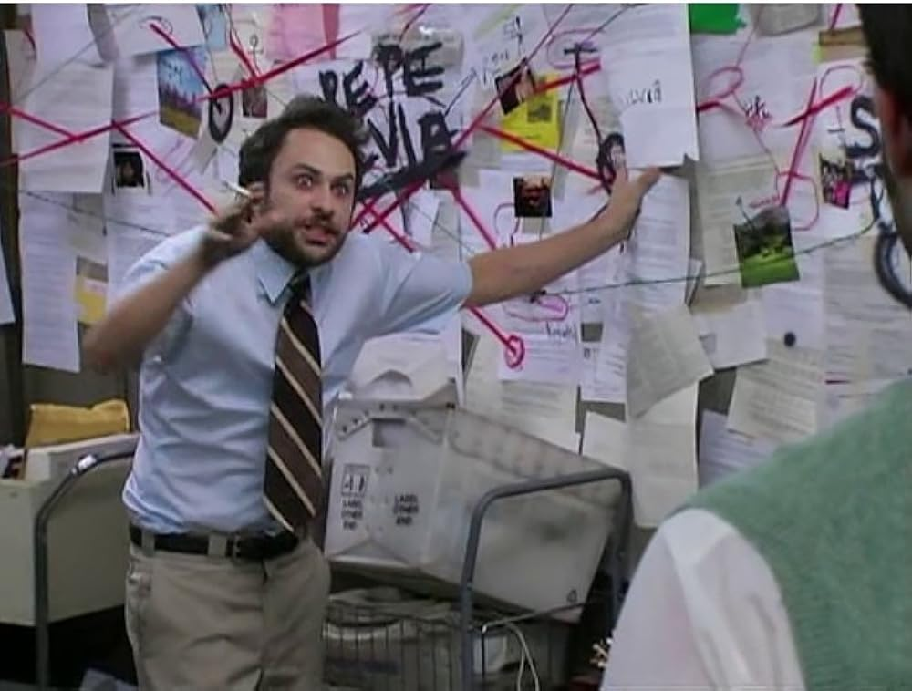

You will never be ready. The sooner you accept this fact, the sooner you can move on and start healing. No amount of prep time will let you name a geographically accurate bartender with an italian accent without at least one person at the table making a crack about it. But the good news is, that's part of the fun! You make stuff up on the fly and your friends all interact with it. It's like a conversation. It's alive, and it belongs to everyone.
I emplore you to plan for at least two paths for every session. Plan for chaos to happen, and let their decisions matter. Because if you plan for just one path, then you will naturally resist any other outcome, no matter how much you tell yourself you are ready for them to avoid the plot like the plague. Think about what the direct opposite of what you plan would be. Think about how they might try to one-up you, and prove to the DM that they are one step ahead of the game. Try to put yourself in their shoes and think about what you would do cynically in their situation, because there will always be that one player on his phone you doesn't give the faintest darn what you would think is important in this situation.
With that being said, use music. I can't describe how much music can affect the emotional investment of your players. If you are taking inspiration from a movie or video game, use that soundtrack. Have a battle playlist on hand. Have chill music at the ready. Nothing will make your player mourn the death of their own character than playing "Oogway Ascends" by John Powell in their final moments. Your players will be on the edge of their seats if you drop the Duel of the Fates as they meet the BBEG. They might actually jump if you play the Prowler theme while you describe the dungeon they enter. My music choices are now entirely dictated by imaginary moments that may or may not happen three months from now.